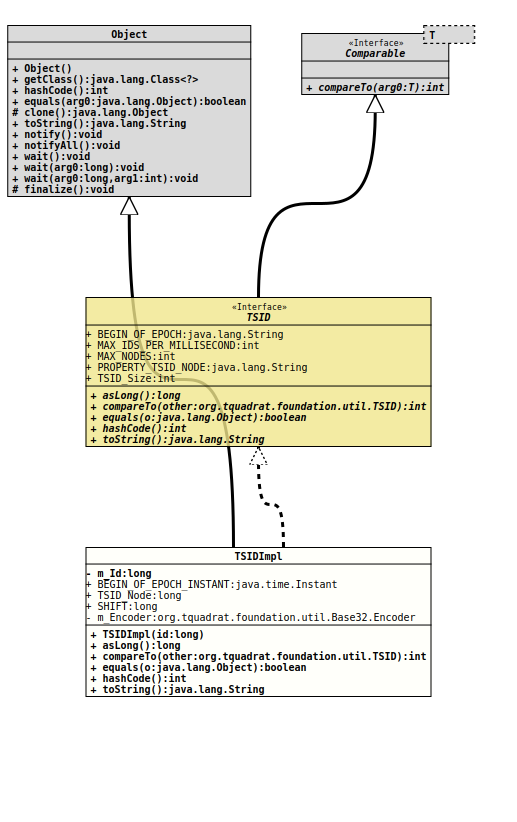

java.lang.Object
org.tquadrat.foundation.util.internal.TSIDImpl
- All Implemented Interfaces:
Comparable<TSID>,TSID
@ClassVersion(sourceVersion="$Id: TSIDImpl.java 1060 2023-09-24 19:21:40Z tquadrat $")
@API(status=STABLE,
since="0.1.0")
public final class TSIDImpl
extends Object
implements TSID
The implementation for the interface
TSID.- Author:
- Thomas Thrien (thomas.thrien@tquadrat.org)
- Version:
- $Id: TSIDImpl.java 1060 2023-09-24 19:21:40Z tquadrat $
- Since:
- 0.1.0
- UML Diagram
-

UML Diagram for "org.tquadrat.foundation.util.internal.TSIDImpl"
{kind=link}
-
Field Summary
FieldsModifier and TypeFieldDescriptionstatic final InstantThe beginning of the epoch for these ids.private static final Base32.EncoderThe encoder fortoString().private final longThe internal representation of a TSID is alongvalue.static final longThe shift to convert the current time into the time-base used by this class.static final longThe node number for the TSIDs.Fields inherited from interface org.tquadrat.foundation.util.TSID
BEGIN_OF_EPOCH, MAX_IDS_PER_MILLISECOND, MAX_NODES, PROPERTY_TSID_NODE, TSID_Size -
Constructor Summary
Constructors -
Method Summary
-
Field Details
-
m_Id
The internal representation of a TSID is alongvalue. -
BEGIN_OF_EPOCH_INSTANT
The beginning of the epoch for these ids. -
TSID_Node
The node number for the TSIDs. -
SHIFT
The shift to convert the current time into the time-base used by this class. -
m_Encoder
The encoder fortoString().
-
-
Constructor Details
-
TSIDImpl
Creates a new instance ofTSIDImpl.- Parameters:
id- The internal representation of a TSID is alongvalue.
-
-
Method Details
-
asLong
Returns the id as alongvalue. -
compareTo
- Specified by:
compareToin interfaceComparable<TSID>- Specified by:
compareToin interfaceTSID
-
equals
-
hashCode
-
toString
Returns a String representation for the TSID. Basically, this is the
Base32format, using Crockfords's schema, prefixed with the letter 'X'. The prefix allows to use the TSID also as an XML id.
-